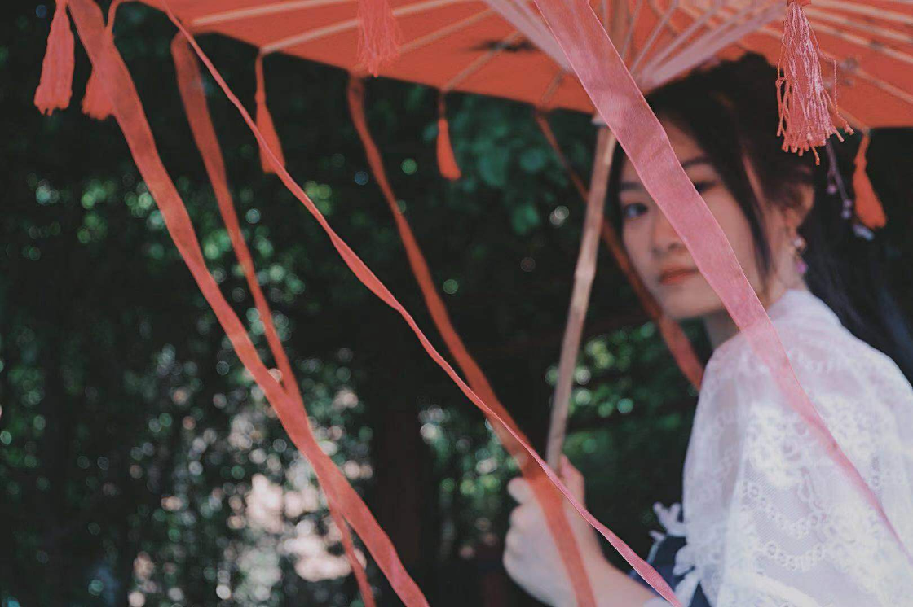

Comrade in Charge of Studies-Phoebe
I am a lively, cheerful, and motivated student. As the monitor and comrade in charge of studies of class three, whether in life or studying, as long as the students need help, I will do my best to help. No matter what happens, I will face it with an optimistic attitude and spread this positive and optimistic mood to other people around me. In my free time, my favorite thing to do is to paint. I can sit in the studio quietly and paint for an afternoon by myself, as if away from the hustle and bustle of the city, just immersed in my own world. There is a unique charm of quiet time and stop time. Because I have a solid foundation in painting, I participated in many painting activities organized by the school. I designed the class flags and emblems of the third class according to the specific situation of the class, which means that we have a passionate original intention and desperately rush to the future, and finally shine on the international stage.

